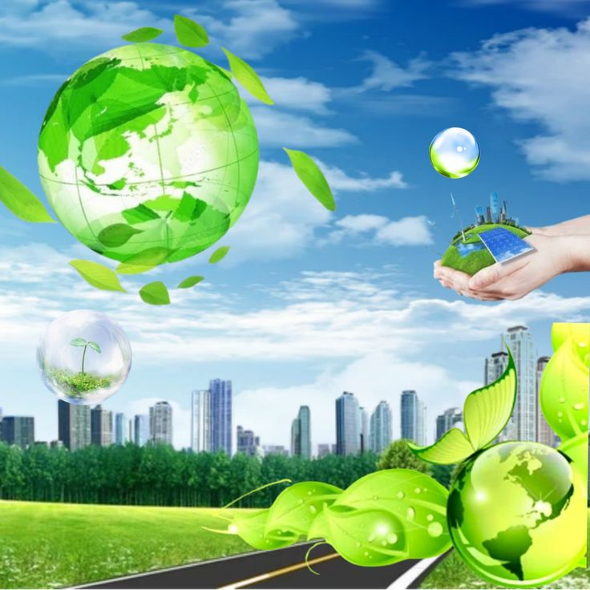
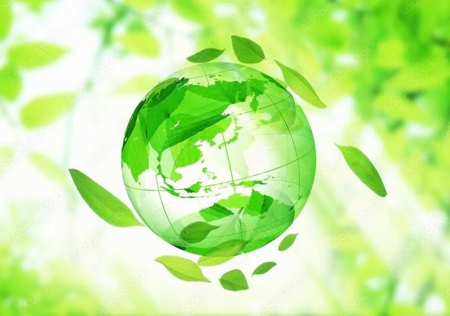
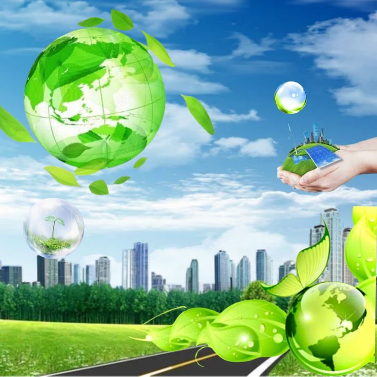
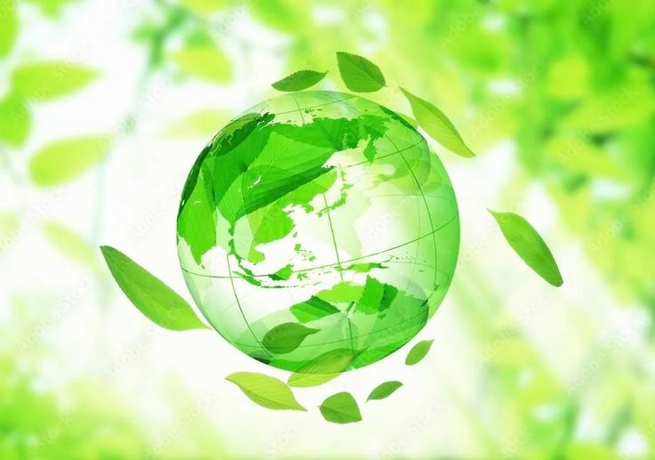

¿Qué es el Frutiger Aero?


Frutiger Aero es una estética visual que dominó gran parte del diseño digital entre los años 2000 y 2010, antes de la llegada del minimalismo plano y los colores neutros. Se caracteriza por su optimismo futurista y su amor por lo digital y lo natural al mismo tiempo. Se distinguen en ella texturas brillantes, paletas de colores vibrantes (especialmente verdes y azules), y elementos inspirados en la naturaleza como cielos con nubes, peces tropicales, agua y burbujas. La estética también presenta destellos de lente, efectos bokeh, patrones de estética cyber y tech, gradientes inspirados en aurora, y el uso frecuente de la tipografía Frutiger.
Origen
El nombre "Frutiger Aero" se deriva de dos influencias clave: la tipografía Frutiger, creada por Adrian Frutiger y comúnmente utilizada en diseños de Frutiger Aero, y la interfaz de Windows Aero, introducida en Windows Vista y Windows 7, que jugó un papel significativo en la popularización de la apariencia brillante y translúcida de la estética. Durante su apogeo, algunos se referían a él como "Web 2.0 Gloss", pero este término describía principalmente elementos de interfaz brillantes en lugar de la estética general. El término "Frutiger Aero" fue introducido en 2017 por Sofi Lee del Consumer Aesthetics Research Institute y ganó una tracción significativa en 2022, lo que llevó a un renovado interés en la estética.
Características Visuales Esenciales
Las interfaces de usuario de Frutiger Aero a menudo incorporan gradientes lineales, efectos de resplandor y brillo, y un brillo satinado en muchos elementos para crear una sensación de profundidad y realismo. A primera vista, los elementos visuales de Frutiger Aero pueden confundirse con la estética Y2K, pero la principal diferencia radica en los gráficos de mayor definición y los gráficos 3D más sofisticados en comparación con la mayoría de las imágenes Y2K (en gran parte debido a que Frutiger Aero surgió justo cuando el video HD comenzaba a ganar popularidad).
Frutiger Aero abarca una variedad de sub-estéticas y estéticas relacionadas, como Frutiger Metro, Technozen, Frutiger Eco y Helvetica Aqua Aero.
Frutiger Metro
Technozen

Frutiger Eco
 


